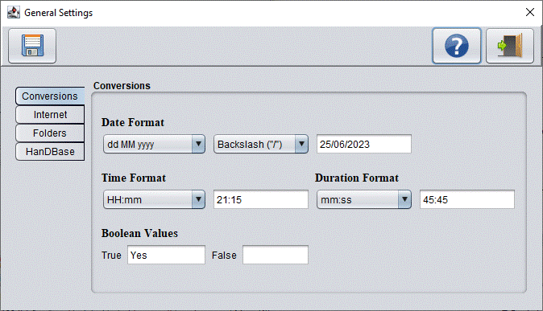
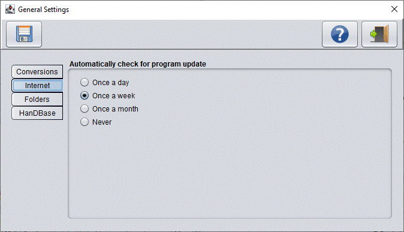
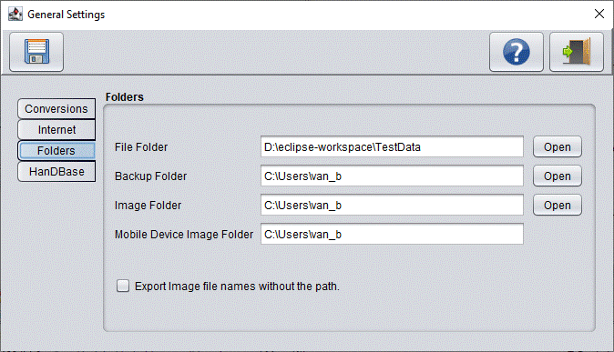

General Settings
Conversions

- Date Format
Here you can select the date format to be used for the exported date fields. There are several formats
to choose from. To help you select a proper format, an example date is shown on the screen.
| Letter |
Description |
| d |
Day number without a leading zero, example: 9 May 2006 |
| dd |
Day number with a leading zero, example: 09 May 2006 |
| M |
Month number without a leading zero, example: 21 9 2006 |
| MM |
Month number with a leading zero, example: 21 09 2006 |
| MMM |
Three letter (english) month name, example: 21 Nov 2006 |
| yy |
two digit year, example: 21 May 06 |
| yyyy |
four digit year, example: 21 May 2006 |
- Time Format
Here you can choose a 24 hours or AM/PM time format, with or without seconds,
| Letter |
Description |
| h |
Hour in 12-hour clock without a leading zero, examples: 9:12, 10:12 |
| hh |
Hour in 12-hour clock with a leading zero, examples: 09:12, 10:12 |
| H |
Hour in 24-hour clock without a leading zero, examples: 9:12, 20:12 |
| HH |
Hour in 24-hour clock with a leading zero, examples: 09:12, 20:12 |
| mm |
Minutes, example: 10:12:20 |
| ss |
Seconds, example: 10:12:20 |
| am/pm |
Suffixes for 12-hour clock, example: 01:15:14 AM |
- Duration Format
Here you can choose a time format to be used for the exported duration fields:
- H:mm:ss (= hours, minutes and seconds)
Examples: 10:34:52, "2:39:05", "0:08:25" or "0:00:43"
- mmm:ss (= minutes and seconds)
Examples: "1123:54", "125:25", "018:50 or "000:16"
- mm:ss (= minutes and seconds)
Examples: "123:54", "25:25", "08:50 or "00:16"
- Boolean Values
Enter here the values to be used as a text replacement for the boolean values True or False
Internet - Automatically check for program updates

Here you could select how often the program should check automatically for updates
- Once a day
- Once a week
- Once a month
- Never
Folders

- File Folder
You can enter here the default folder for creating the DBConvert- or FNProg2PDA export files.
- Backup Folder
This folder is used as a default location for your DBConvert and FNProg2PDA backup files.
- Image Folder
Here you can specify the default folder in which FNProg2PDA should create the image (bmp, jpeg or png) files for HanDBase or
CSV files on your PC
- Mobile Device Image Folder
When used, the program still creates the image files in the Image Folder, but writes the
Mobile device image foldername + image filename in the export file instead. After copying the files manually on the mobile device in
the folder (that is specified here), the database program on the mobile device should be able to retrieve the correct location
of the image files automatically.
Export image file names without the path.
- When selected, it removes the path information from the file name
For example: image.jpeg instead of d:/data/images/image.jpeg
Notes:
FNProg2PDA uses two internal date types, namely "incomplete" and "standard" dates. Incomplete dates are
dates in the FNProgramvare databases that don't need to be completely entered. For example: a published date,
that is entered without a day, like 05.2006 (May, 2006). Standard dates are dates that need to be entered
completely in the FNProgramvare database. For example: the due date of a reserved book.
"Incomplete" date fields are always exported as text. "Standard" date fields however can be exported as text
and (for some export file formats) also as date fields.
The difference between time and duration is that duration represents the length of time of a CD, track or video)
and time the time of a day. Duration fields are always exported as text. Time fields can either be exported to
text and (for some export file formats) also as time fields.